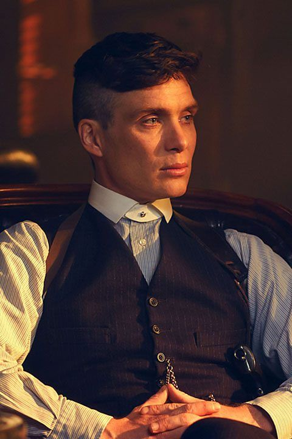

Cillian Murphy
Cillian Murphy tem 47 anos e nasceu em Douglas, Cork, Irlanda é um ator irlandês que desempenha o papel principal em "Peaky Blinders" como Thomas Shelby, líder da gangue criminosa. Sua atuação é uma das chaves do sucesso da série, e ele é elogiado por sua capacidade de retratar um personagem tão enigmático e multifacetado.